Советы по работе в vim
Совершенно случайно наткнулся в интернетах на такую замечательную вещь: Mastering vim. Это небольшой (3,5 часа примерно) видео-курс по vim за авторством Damian Conway. По его словам, он угорает в vi/vim уже 30 лет (я неслабо так удивлён). А значит, ему есть о чём рассказать. Курс я посмотрел целиком, и оно того стоило. Узнал оттуда о большом количестве команд, которые до этого совсем не встречал. Собственно, данный пост – это подборка различных советов и трюков, которые я почерпнул, пока смотрел этот курс и лазил по документации в процессе.
Help
Многие знают о команде :help (или короче: :h). Она невероятно полезная, ибо
что в документации самого vim, что в документации сторонних плагинов обычно всё
достаточно подробно расписано. Что какая команда как делает, какая настройка за
что отвечает и т.п. Только вот эта команда сразу переходит к первому
попавшемуся результату. Что не всегда оказывается тем, что требуется найти. И
здесь на помощь приходит :helpgrep (:helpg). Она же выводит результаты
поиска в Quickfix список. По этим результатам затем можно достаточно удобно
переходить при помощи следующих команд:
:cnext– перейти к следующей записи в Quickfix списке:cprev– перейти к предыдущей записи:cfirst– перейти к самой первой записи:clast– перейти к самой последней записи
Разумеется, если результатов поиска достаточно много, то вводить эти команды может стать утомительно. И здесь на помощь приходит плагин vim-unimpaired от вездесущего Tim Pope, плагины которого уже заполонили половину моего vimrc. Этот плагин добавляет большое количество полезных сочетаний клавиш. И среди них есть те, которые упрощают работу с Quickfix списком. Вот они:
[q–:cprev]q–:cnext[Q–:cfirst]Q–:clast
К тому же, их достаточно легко запомнить. Особенность всех сочетаний, которые
добавляет плагин, в том, что они так или иначе используют [ или ]. За
подробностями го в :h unimpaired.
И напоследок, два поисковых запроса, при помощи которых можно найти множество интересных команд для normal и insert mode:
:h normal-index– откроет страницу хелпа, на которой перечислены все команды, доступные в normal mode:h insert-index– аналогично, но для insert mode
История изменений
Оказывается, история изменений в vim’е не линейная, а древовидная. А это
значит, что все сделанные измения можно восстановить. И помимо команд u и
ctrl+r присутствуют другие, которые как раз и позволяют перемещаться по
ветвям дерева, представляющего историю изменений. Рассмотрим пример:
- Создали новый файл
- Добавили строку: “Как я тебе это чистить буду? Вилкой что ли?!"
- Добавили ещё строку: “Чисти, чисти, чисти. Раз-раз-раз."
- Удалили эту сроку
- Добавили вместо неё строку: “У тебя самого хорошо получается. Ты и чисти."
Если воспользоваться командами u и ctrl-r в normal mode, то мы сможем
перемешаться в истории только по таким изменениям:
- “Как я тебе это чистить буду? Вилкой что ли?!"
- “У тебя самого хорошо получается. Ты и чисти."
Но мы не сможем вернуться на тот момент, когда была добавлена строка “Чисти, чисти, чисти. Раз-раз-раз." Для этого существуют другие команды:
g-– переключиться на самое последнее измение в предыдущей ветви историиg+– переключиться на самое последнее измение в следующей ветви истории
Другими словами, если сейчас мы находимся на том моменте, когда была добавлена
строка “У тебя самого хорошо получается. Ты и чисти.", то при помощи команды
g- мы можем вернуться к тому моменту, когда была добавлена строка “Чисти,
чисти, чисти. Раз-раз-раз.". А вернуться обратно уже можем при помощи g+.
Но всё это как-то сложно и к тому же не всегда может быть очевидно, а к какому вообще моменту истории файла мы перейдём в итоге. Разумеется, для упрощения жизни существует крутой плагин: gundo.vim. Он визулизирует дерево изменений файла и показывает в виде диффа то, что было изменено на конкретном шаге. Пример:
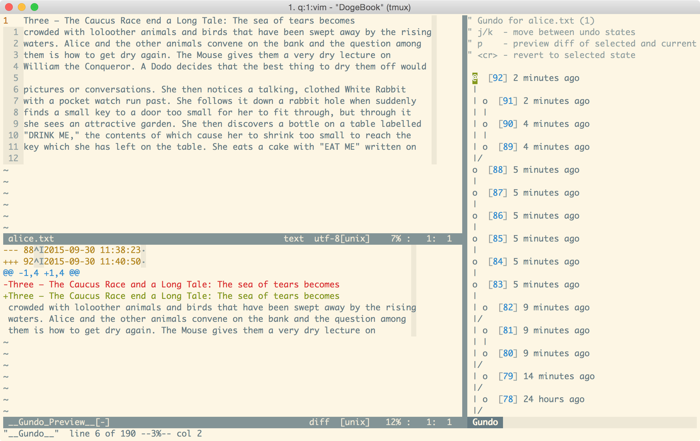
Подробнее про историю изменений и про плагин gundo.vim можно глянуть в этом скринкасте. Там, помимо всего прочего, есть интерактивная иллюстрация того, как выглядит история изменений.
Для истории измений существуют различные настройки. Одна из самых полезных – это возможность сохранения истории на диске. Таким образом, она будет доступна даже после того, как мы закроем файл или даже сам vim, а потом снова откроем. Для включения необходимо добавить следующую строчку в .vimrc:
set undofileПо-умолчанию, файлы с историей изменений хранятся рядом с самими редактируемыми файлами. Что не совсем удобно. Это также настраивается:
set undodir=~/.vim/undo//Стоит обратить внимание на // на конце. С такой настройкой vim будет создавать
файлы примерно следующего вида:
$ ll ~/.vim/undo
-rw-r--r-- 1 schfkt staff 55K 27 сен 14:37 %Users%schfkt%code%vim-examples%alice.txt
-rw-r--r-- 1 schfkt staff 2,3K 27 сен 14:39 %Users%schfkt%dotfiles%vimrcЭто позволит избежать конфликтов для файлов, имеющих одинаковые имена. Т.к.,
иначе vim (если просто указать какую-то директорию без //) для файла с
историей будет использовать имя аналогичное имени редактируемого файла.
Ещё одна полезная опция – это количество записей в истории изменений. По-умолчанию задано 1000. Может быть маловато, поэтому я поменял на 5000:
set undolevels=5000Поиск и замена
До просмотра вышеупомянутого курса я как-то совсем плохо знал, как пользоваться заменой в vim’е. Не так уж и часто приходилось это делать, поэтому синтаксис команды постоянно улетучивался из памяти. Да и более сложные (с регэкспами, например) поисковые запросы я практически не использовал.
Самая главная причина, из-за которой с регэкспами в vim’е у меня не сразу
заладилось, лежит в том, что почти все спецсимволы в регэкспах (+, *, ? и
т.д.) нужно экранировать обратным слэшем. Например, если мы хотим найти
несколько идущих подряд чисел, то регэксп для этого будет выглядеть так:
\d\+. А не \d+, как можно было подумать. В случае же, если таких
спецсимволов в регэкспе много, то это быстро может надоесть (никто же не любит
делать одни и те же повторяющиеся действия). Чтобы решить эту проблему, можно
добавлять к регэкспам префикс \v. Если верить документации, он включает
особый – “very magic” – режим работы регэкспов:
Use of “\v” means that in the pattern after it all ASCII characters except ‘0’-‘9’, ‘a’-‘z’, ‘A’-‘Z’ and ‘_’ have a special meaning. “very magic”
В нём почти все символы считаются специальными. Вот вам два аналогичных регэкспа для сравнения:
\v(чисти-?){3}\(чисти-\?\)\{3\}
Первый, на мой взгляд, куда привычнее. Да и его проще написать.
Ещё одна особенность регэкспов в том, что для границ слова в них используется
не \b, а другие символы:
\<– для левой границы слова\>– для правой
Например, если мы хотим найти отдельное слово “VIM”, то регэксп для этого будет
выглядеть так: \<VIM\>. Причём под словом в vim’е подразумевается следующее
(см. :h word):
A word consists of a sequence of letters, digits and underscores, or a sequence of other non-blank characters, separated with white space (spaces, tabs, <EOL>). This can be changed with the ‘iskeyword’ option. An empty line is also considered to be a word.
А это значит, что регэксп \<VIM\> найдёт “VIM” в строке: “I heard you like
VIM”. Но не найдёт ничего в строке: “OMG_LOL_VIM_WOW”.
Перейдём к замене. Самый простой пример данной команды выглядит так:
:s/doge/wowВ этом случае в строке, на которой находится курсор, самый первый фрагмент
текста “doge” будет заменён на “wow”. Именно так. И если в строке имеются
два таких фрагмента, то второй останется неизменённым. Чтобы заменить все
найденные фрагменты текста нужно воспользоваться флагом g:
:s/doge/wow/gИ разумеется здесь можно использовать регэкспы:
:s/\d\+/<NUMBER>/gТакже для этой команды (да и вообще для любых других команд в command mode)
можно указать диапазон строк. Существует большое количество способов того, как
его можно указать (:h range). Я лишь перечислю те, которые мне запомнились:
- Со строки 1 по строку 100:
:1,100s/beep/boop/g- Строки относительно текущей. В данном случае замена будет сделана на текущей строке, на 10 строках выше и на 20 ниже:
:-10,+20s/beep/boop/g- Начиная с текущей строки. Чтобы заменить на текущей строке и на 10 строках ниже неё:
:.,+10s/beep/boop/g- С какой-либо строки и до конца файла:
:10,$s/beep/boop/g- Весь файл (шорткат для
1,$):
:%s/beep/boop/gЕщё у команды замены есть довольно полезная опция c, например:
:%s/and/end/gcЕсли указать её, то перед заменой каждого совпадения vim будет спрашивать действие:
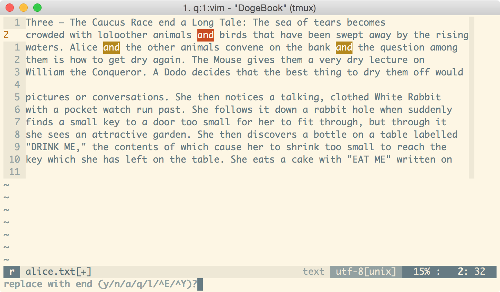
Описание опций:
y– заменить текущее совпадение и перейти к следующемуn– не заменять текущее совпадение и перейти к следующемуa– заменить текущее и все остальные найденные совпаденияl– заменить текущее совпадение и остановитьсяq– не заменять текущее совпадение и остановиться^Eи^Yу меня почему-то не захотели работать, да и в документации ничего толком не удалось найти
Вооружившись полученными знаниями, я навернул себе полезный маппинг:
nnoremap <Leader>r :.,$s/\<<C-r><C-w>\>//gc<left><left><left>Это заклинание заменяет слово, на котором расположен курсор, на то, что вы
укажете. Делает оно это начиная с текущей строчки и до конца файла. При этом
указана опция c, которая позволяет выбирать что конкретно менять, а что нет.
Этот маппинг я использую в основном для переименовывания переменных, методов и
т.д. Довольно удобно. Например:
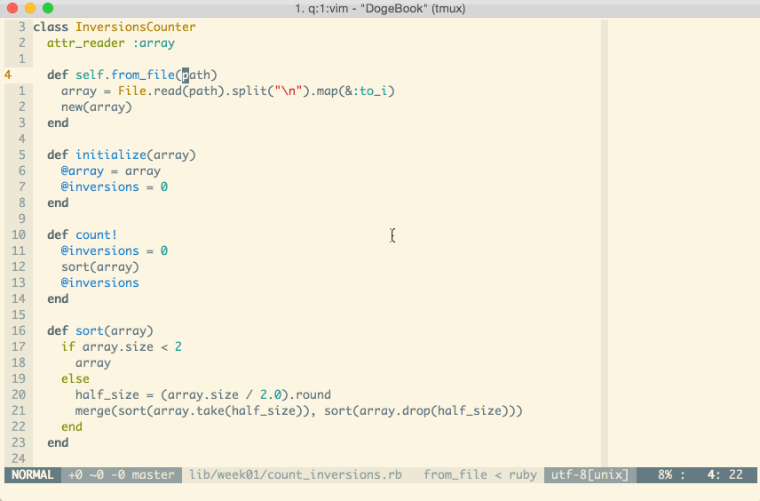
Кстати, в normal mode есть пара команд, связанных с заменой:
&– повторить на текущей строке предыдущую команду заменыg&– повторить на всём файле предыдущую команду замены
А теперь перейдём к команде :g. Она позволяет выполнить какую-либо команду
для строк, которые будут найдены заданным поисковым запросом. Например:
:g /^\s/ :centerВ данном случае, vim отцентрирует текст в строках, которые содержат хотя бы один пробел в начале. Как говорится, лучше один раз увидеть:
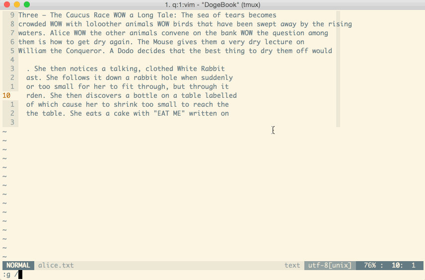
Пример покруче:
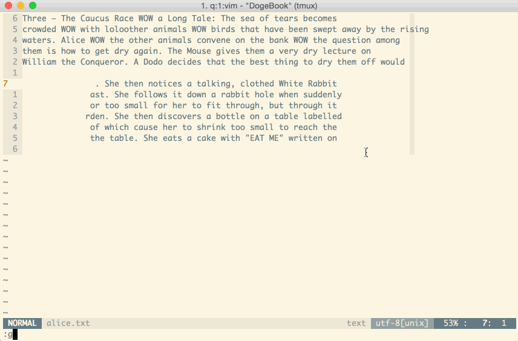
Да, да. При помощи :normal можно выполнять команды из normal mode прямо в
command mode. Это очень круто.
И чуть не забыл: ещё есть :g!. Она похожа на :g, только выполняет команды
для тех строк, которые не удовлетворяют поисковому запросу.
Insert mode
В vim есть такая вещь как регистры. Они вовлечены во множество выполняемых
операций (копирование, удаление, макросы, и т.д.). Здесь можно почитать о них
подробнее: Advanced Vim
registers. Или же можно
посмотреть справку: :h registers. Так вот, для insert mode есть довольно
полезное сочетание клавиш, при помощи которого можно вставить содержимое
регистра в буфер: ctrl+r a. Где a – имя регистра. Можно записать макрос в
какой-нибудь из регистров, вставить его в буфер, отредактировать и записать
полученный текст обратно в регистр. Таким образом можно поправить макрос.
Вариантов применения можно найти много.
Эту фичу круто использовать с регистром =. Если в insert mode нажать
ctrl+r =, то vim попросит ввести выражение. Например, можно ввести 60 * 60 * 24
и нажать Enter. Vim это выражение выполнит и результат вставит в буфер.
А вот ещё парочка полезных команд для insert mode:
-
ctrl+t– увеличить отступ для текущей строки -
ctrl+d– уменьшить отступ для текущей строки -
ctrl+o– позволяет переключиться в normal mode для выполнения всего одной команды. После выполнения которой vim обратно переключается в insert mode. Например, можно быстренько удалить все символы от курсора и до конца строки, а затем автоматически вернуться в insert mode:ctrl+o D. -
ctrl+a– вставить тот фрагмент текста, который был вставлен за предыдущий сеанс работы в insert mode. Например: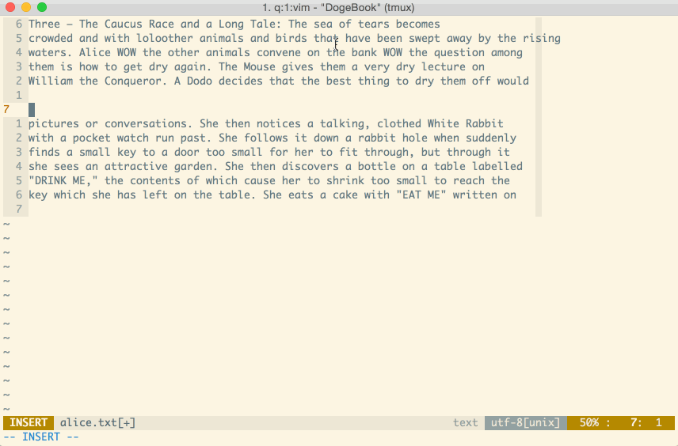
Normal mode
Очередь за normal mode. Здесь особо расписывать нечего, поэтому просто приведу список команд с кратким описанием:
ZZ– делает тоже самое, что и:xZQ– тоже самое, что и:q!ge– перейти на конец предыдущего слова. Какe, только в обратном направлении.ctrl-g– выведет информацию о файле в самом низу окна vim. Например: “alice.txt” line 15 of 15 –100%– col 28. Вообще, всю эту информацию можно увидеть в status bar, если настроить его соответствующим образом.
Хотя, одна команда таки заслуживает более подробного описания. Это
gq{motion}. Она выполняет переформатирование текста. Например, gqip
позволяет автоматически переформатировать параграф текста таким образом, что
строки в нём по длине не будут превышать 81 символ (или сколько у вас задано в
настройках). Часто использую её при написании блогозаписей. И снова, лучше один
раз увидеть:
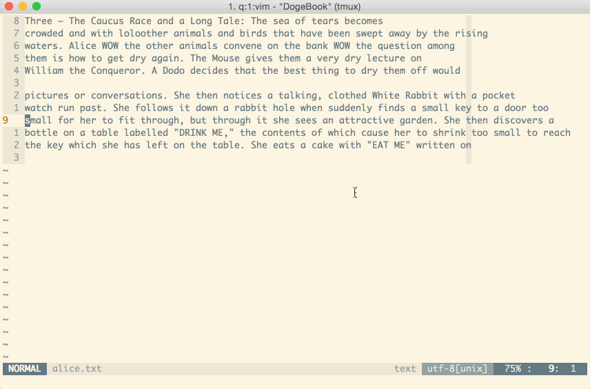
Visual mode
Оказывается, между разными типами visual mode можно переключаться. Например:
- Переходим в visual line mode (
V) и выбираем пару строк. - Нажимаем
ctrl+v, и vim переключается в visual block mode. Сохранив при этом выделение, но поменяв его соответствующим образом. - Нажимаем
v, и vim переключается в visual mode.
И снова гифка:
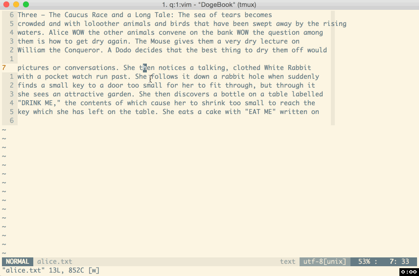
А вот visual block mode имеет пару очень крутых возможностей. Дальше и пойдёт речь о них.
<c-v>{motion}I{text} позволяет выделить некоторый блок текста и вставить
перед ним на каждой строке определённый текст. Например, <c-v>5jI>> <Esc>:
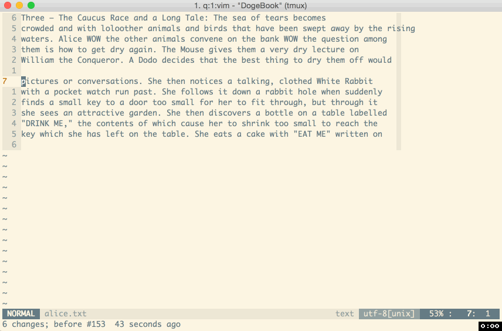
<c-v>{motion}A{text} аналогичен предыдущему, но текст вставляется после
каждой строки выделенного блока. Например, <c-v>5jA >>>><Esc>:
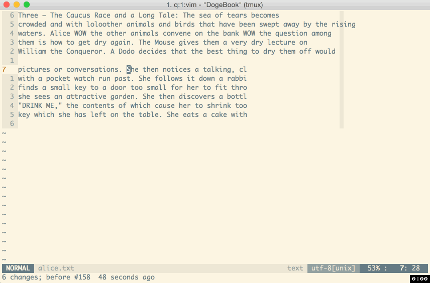
<c-v>{motion}c{text} – при помощи этого можно заменить текст в блоке.
Например, <c-v>5jec COOKIES! <Esc>:
И последнее: <c-v>{motion}r{char}. Заменяет каждый символ в выделенном блоке
на указанный. Например, <c-v>5j$r*:
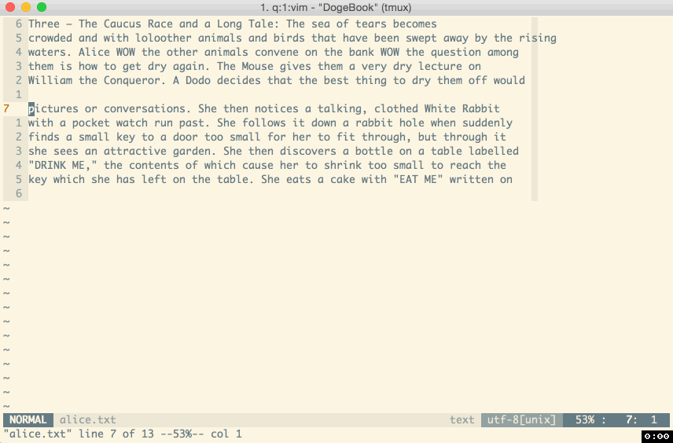
Кстати, для normal mode есть ещё команда gv. Она позволяет повторить
предыдущую операцию выделения.
Command mode
Ну а для command mode у меня припасён всего лишь один совет – это команда
ctrl-f. Она позволяет редактировать вводимые команды, используя так привычные
нам insert mode и normal mode. Эта фича прям очень упрощает жизнь при вводе
каких-то длинных команд в command mode.
Заключение
Довольно объёмный пост получился. Надеюсь, кому-нибудь он поможет стать продуктивнее в vim’е. Ну а если у вас есть идеи (какие-нибудь команды, удобные мапинги и пр.), то просьба постить их в комментарии.